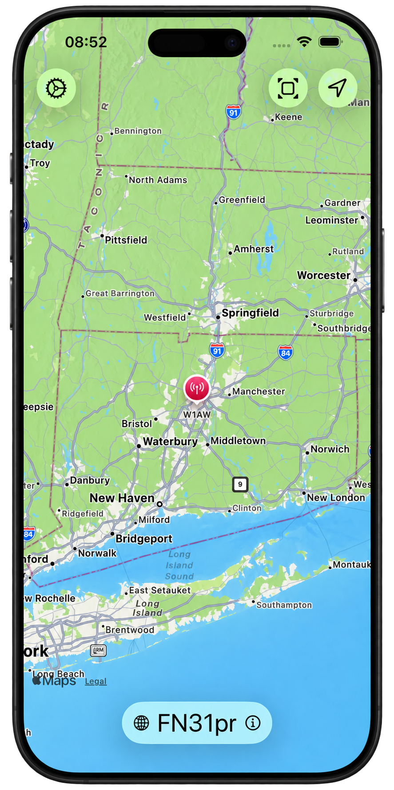
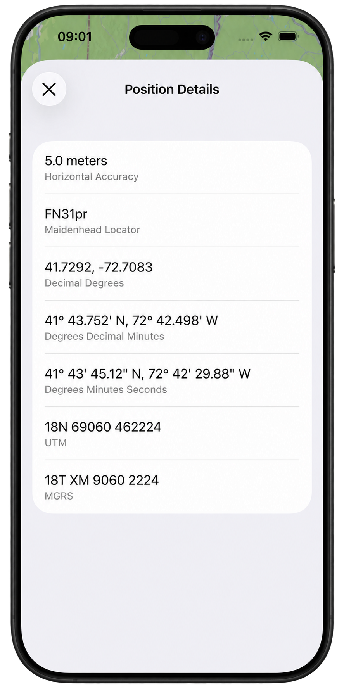

PROJECT / 01 · NATIVE iOS
MyQTH
One location. Several ways to describe it.
A location utility for amateur radio operators, built with SwiftUI, MapKit, and Core Location. An interactive map connects your position to Maidenhead, latitude/longitude, UTM/UPS, and MGRS coordinates.
Read the case study View source